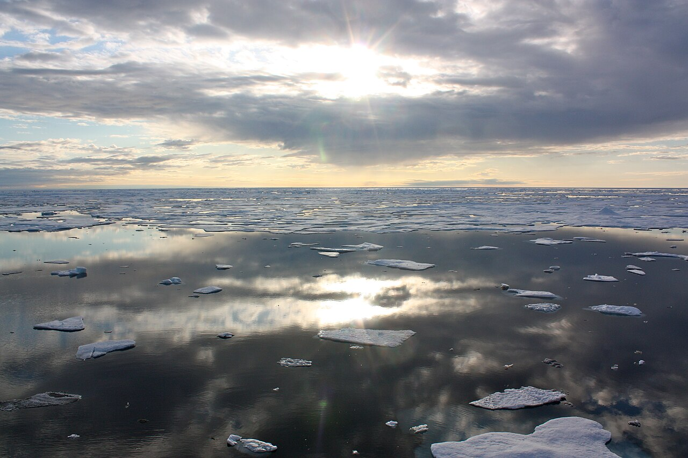

La mappa spiega · Mondo
L'Artico, la nuova frontiera: rotte, risorse e basi
Il ghiaccio si ritira e intorno al Polo Nord si apre una corsa: la rotta del Mare del Nord, il fondale conteso, l'accordo sulla Groenlandia. E il ruolo dell'Italia.

Il ghiaccio dell'Artico si ritira, e intorno al Polo Nord si apre una corsa: rotte più corte tra Asia ed Europa, gas e petrolio sotto il fondale, basi militari. È il seguito del nostro video sulla Groenlandia: chi vuole cosa, e che c'entra l'Italia.
1Il ghiaccio
Secondo uno studio pubblicato nel 2022 (Rantanen e altri, Communications Earth & Environment), tra il 1979 e il 2021 l'Artico si è scaldato quasi quattro volte più in fretta della media del pianeta. Il 12 settembre 2026 il ghiaccio marino ha toccato il minimo estivo: 4,6 milioni di chilometri quadrati, secondo NASA e NSIDC. È il decimo valore più basso da quando ci sono i satelliti, a pari merito con 2008, 2010 e 2025. Negli ultimi anni il minimo di settembre non scende più a ogni stagione, ma resta molto sotto la media di lungo periodo.
2Le rotte
Con meno ghiaccio si naviga di più lungo la costa russa, sulla rotta del Mare del Nord. Tra Shanghai e Rotterdam si risparmia circa una settimana rispetto al passaggio per Suez. Secondo il Centre for High North Logistics, al 30 settembre 2026 i transiti erano 104, contro i 103 di tutto il 2025, con 3,7 milioni di tonnellate di merci (+15%). Diverse navi sono partite dalla Cina verso l'Europa. Ma la stagione utile dura pochi mesi d'estate, e la rotta è gestita dalla Russia.
3Chi rivendica cosa
Russia, Danimarca (per la Groenlandia) e Canada hanno chiesto alla Commissione dell'ONU sui limiti della piattaforma continentale di riconoscere come prolungamento del proprio territorio anche il fondale sotto il Polo Nord, lungo la dorsale di Lomonosov. Le richieste si sovrappongono: la Commissione formula raccomandazioni tecniche, ma i confini tra Stati vanno negoziati tra loro.
In gioco ci sono risorse: secondo una stima del Servizio geologico degli Stati Uniti del 2008, a nord del circolo polare si troverebbe circa il 30% del gas e il 13% del petrolio non ancora scoperti nel mondo, in gran parte in mare.
4Le basi
La Russia ha la costa artica più lunga e lì tiene la sua Flotta del Nord. Gli Stati Uniti hanno firmato a settembre, a margine dell'Assemblea generale dell'ONU, un accordo sulla sicurezza con Danimarca e Groenlandia: secondo il testo pubblicato dal ministero degli Esteri danese, gli americani potranno modernizzare la base di Pituffik e creare nuove aree di difesa a Narsarsuaq e Mestersvig. Non c'è nessuna annessione: per la prima ministra danese Mette Frederiksen l'accordo riconosce la sovranità del Regno di Danimarca. Trump, il 14 ottobre, è tornato a parlare di «una massiccia attività di esplorazione di petrolio, gas e minerali» sull'isola.
Con l'ingresso di Finlandia e Svezia, sette degli otto Paesi del Consiglio artico sono nella Nato. L'ottavo è la Russia.
Il Consiglio artico
Il Consiglio artico riunisce Canada, Danimarca, Finlandia, Islanda, Norvegia, Russia, Svezia e Stati Uniti, insieme alle organizzazioni dei popoli indigeni. Dal maggio 2025 lo presiede la Danimarca, fino al 2027. Dopo l'invasione russa dell'Ucraina la collaborazione con Mosca si è in gran parte fermata, e il lavoro si è concentrato su clima, ambiente marino e popolazioni artiche.
Il conto per l'Italia
L'Italia è osservatrice nel Consiglio artico dal 2013. Dal 1997 il CNR gestisce la base di ricerca Dirigibile Italia a Ny-Ålesund, nelle isole Svalbard. Il 16 gennaio 2026 il governo ha presentato una nuova strategia artica: l'Italia si definisce «Stato non artico», non punta a una presenza militare autonoma e vuole contribuire alla sicurezza della regione nel quadro di Nato e Unione europea, con spazio per ricerca e imprese (infrastrutture, energia, spazio, cantieristica). Sul fronte energetico, Vår Energi, società norvegese controllata da Eni, estrae petrolio nel Mare di Barents con il giacimento Goliat.
La domanda di ParrhesIA: l'Artico resterà un luogo di cooperazione, o diventerà il prossimo fronte?
Fonti
- NASA Earth Observatory: Arctic sea ice shrinks to its 2026 minimum
- Università della Finlandia orientale: l'Artico si scalda quattro volte più in fretta (Rantanen et al., 2022)
- gCaptain, 19 ottobre 2026: Northern Sea Route transits surpass 2025 total
- PBS NewsHour: China has a new short cut thanks to melting Arctic ice
- USGS: Assessment of undiscovered oil and gas in the Arctic (2008)
- Il Post, 19 settembre 2026: l'accordo annunciato da Trump sulla Groenlandia
- Euronews, 14 ottobre 2026: dallo scudo antimissile al petrolio, Trump non molla sulla Groenlandia
- Eunews, 12 maggio 2025: la Danimarca alla presidenza del Consiglio artico
- Pagella Politica: che cosa prevede la nuova strategia italiana sull'Artico
- Ministero degli Esteri: L'Italia e l'Artico
- CNR, Istituto di scienze polari: stazione Dirigibile Italia
- Eni: Goliat, Norvegia
Questo articolo è stato scritto con l'intelligenza artificiale e verificato sulle fonti indicate. Hai trovato un errore? Segnalalo sui nostri social: le correzioni vengono pubblicate qui con la data della modifica.